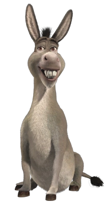
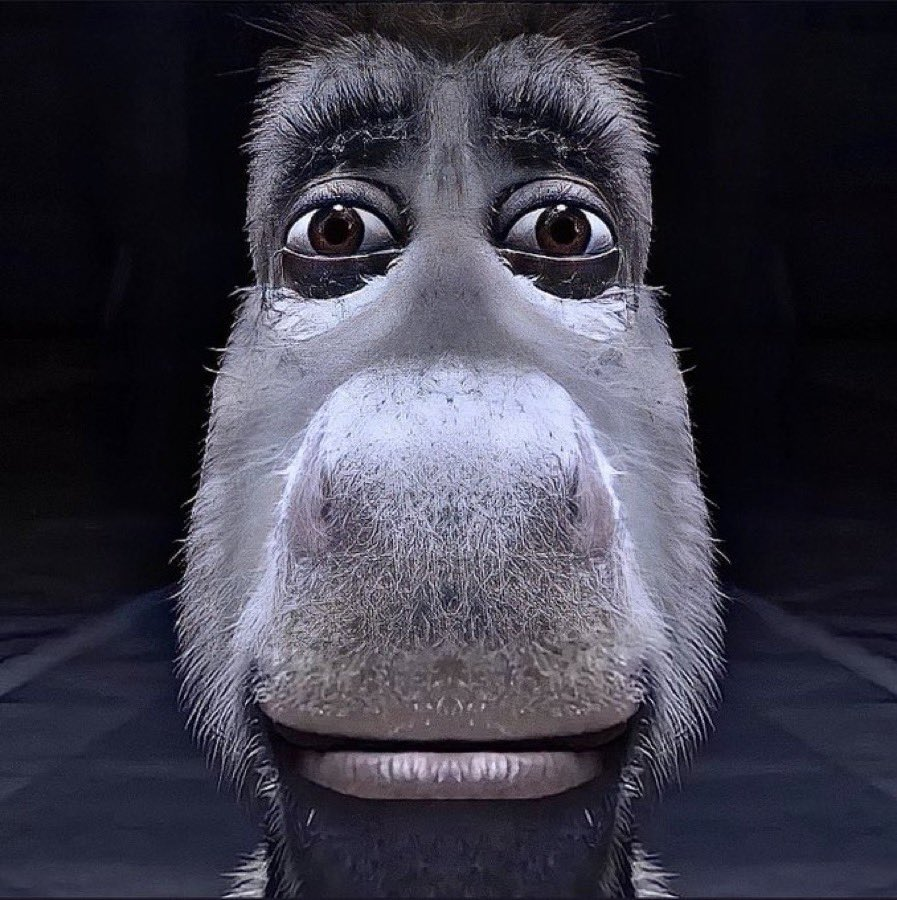
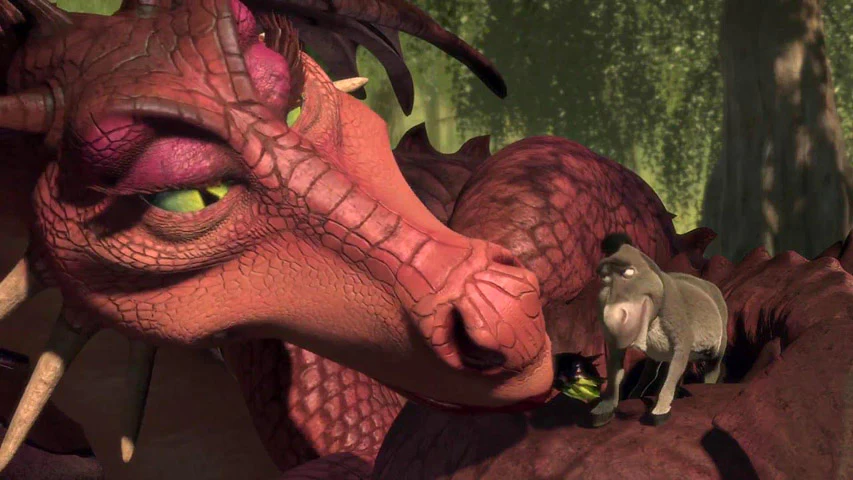
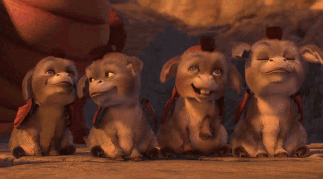

L'Âne

Dans Shrek, l'Âne est un personnage emblématique avec une personnalité exubérante et attachante.
Il est extrêmement bavard, au point d’en devenir parfois agaçant pour ceux qui l'entourent, surtout pour Shrek.
Malgré cela, il est très loyal et d’une amitié inébranlable : il accompagne Shrek dans toutes ses aventures,
même quand les choses deviennent difficiles ou dangereuses.
L'Âne est également optimiste et enthousiaste, toujours prêt à voir le bon côté des choses.
Il peut être naïf et un peu simplet, mais c’est justement ce qui le rend si drôle et sincère.
Il a une grande capacité à s’attacher aux autres et ne se laisse jamais décourager par le rejet de Shrek ou par les situations périlleuses.
Son humour et sa candeur apportent de la légèreté et du réconfort, même dans les moments sombres du film.
Sa naïveté se reflète dans son absence de peur et son habileté à se lier d'amitié avec n'importe qui,
même un dragon ! Son énergie débordante, son besoin de parler constamment et sa façon de chanter à tout moment en font un personnage inoubliable.
L'Histoire de L'Âne

Le passé de L'Âne (Jo) est assez peu connu. Avant sa rencontre avec Shrek,
la fermière à laquelle il appartenait était sur le point de le vendre. On apprend
dans le deuxième film que sa vie à la ferme n'était pas des plus plaisantes :
des enfants le tapaient en le prenant pour une piñata et la fermière ne semblait
pas le porter dans son cœur. Dans le premier film, L'Âne s'attache très rapidement
à l'ogre auquel il doit la liberté et l'accompagne dans sa quête pour libérer la
princesse Fiona de sa tour. C'est dans cette même tour qu'il fait la connaissance
de Dragonne, qui deviendra sa femme. Malgré des disputes avec Shrek, ces derniers
deviennent meilleurs amis, si bien que dans le deuxième film, L'Âne accompagne Shrek et Fiona
pour rendre visite aux parents de cette dernière. Alors que Shrek cherche à prendre une potion
pour devenir beau, L'Âne, en ayant également ingurgité, se transforme en cheval jusqu'à ce que
le sort soit annulé. Au cours de cette nouvelle aventure, ils se lient d'amitié avec Potté, qui
s'intègre à la bande formée alors avec Pinocchio, les Trois Petits Cochons, P'tit Biscuit et
compagnie. Lors du troisième film, L'Âne accompagne Shrek qui souhaite convaincre un cousin éloigné
de Fiona, un certain Arthur, de devenir roi et ainsi régner sur Fort Fort Lointain à leur place. C'est
ici qu'il devient père de six dragons. Dans le quatrième film, dans la réalité parallèle créée par Shrek,
L'Âne est à nouveau un inconnu. Il rencontre Shrek dans la Forêt alors qu'il tombe dans un piège à cause
d'une gaufre, son péché mignon.
La Dragonne et L'Âne

La relation entre l'Âne et la Dragonne dans Shrek est aussi surprenante qu’adorable.
Tout commence de manière plutôt mouvementée : lors de leur première rencontre,
la Dragonne est une menace redoutable, gardienne du château où la princesse Fiona est retenue prisonnière.
Elle semble prête à dévorer l'Âne, mais celui-ci, dans sa manière unique de tout tourner en conversation,
parvient à la charmer sans le vouloir. Compliment après compliment,
il lui parle avec enthousiasme et désinvolture, ce qui semble désarmer la Dragonne.
Très vite, la Dragonne tombe sous le charme de l'Âne, ce qui est totalement inattendu.
Elle devient très attachée à lui et passe même d’une menace terrifiante à une amoureuse passionnée.
Au début, l'Âne n’est pas très à l’aise avec cette affection un peu trop démonstrative, mais avec le temps,
il apprend à l’apprécier et à la considérer comme une véritable amie, voire plus. Dans les films suivants,
leur relation se développe davantage et ils finissent par former une famille improbable mais attendrissante,
avec des petits “Dragâneaux” mi-dragon, mi-âne.
La relation entre l'Âne et la Dragonne est donc marquée par un amour inattendu et improbable,
mais sincère. Ils représentent une idée d'acceptation et de dépassement des différences.
Leurs caractères opposés, entre l’enthousiasme maladroit de l’Âne et la force imposante de la Dragonne,
forment un duo amusant et touchant qui ajoute une dose d'humour et de tendresse dans l'univers de Shrek.
Dragâneaux

Les petits Dragâneaux dans Shrek sont des créatures hybrides attachantes,
nées de l’union improbable entre l’Âne et la Dragonne.
Leur apparence est un mélange harmonieux des deux espèces :
ils ont le corps et le museau allongé d'un petit âne, mais sont recouverts d’écailles et possèdent des ailes,
comme leur mère dragonne. Leurs écailles sont principalement de couleur verte,
semblables à celles de la Dragonne, et leurs petites ailes leur permettent de voler joyeusement autour de leurs parents.
En termes de personnalité, ils sont aussi vifs et bavards que leur père,
avec une curiosité naturelle et une énergie débordante. Tout comme l’Âne,
ils ont tendance à explorer leur environnement avec enthousiasme et sont facilement joueurs et amusants.
Ils aiment se chamailler entre eux et peuvent même cracher de petites flammes, héritage de leur mère.
Ces Dragâneaux apportent une touche de comédie et d’innocence,
symbolisant une famille unie et pleine de vie malgré leurs différences.
Avec leurs expressions adorables et leur énergie, ils forment un charmant mélange de douceur et de force,
rendant la famille de l'Âne et de la Dragonne encore plus unique et inoubliable.